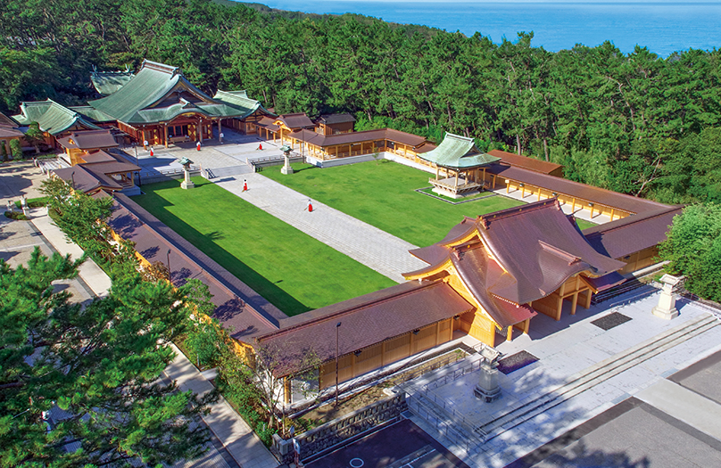

白木を生かした重厚な造りの社殿
白木を生かした重厚な造りの社殿
歴史と概要
明治元年（1868年）の戊辰戦争から第二次世界大戦に至るまで、国や郷土のために殉じた新潟県出身の戦没者（約7万7千柱）を祀る神社です。 昭和20年（1945年）に寄居浜近くの白砂青松の地（現在地）へ移転造営されました。
建築・見どころ
1. 昭和の神社建築と白木造り
白木を生かした重厚感のある日本建築。広い境内と美しい回廊構造を持ち、昭和初期の神社建築様式を色濃く残しています。
2. 松林に囲まれた静謐な境内
新潟市の中心部にありながら日本海沿岸の松林に囲まれており、静かな参道と荘厳な雰囲気が保たれています。

松林と日本海に隣接する広大な境内研修での学習・着眼点
昭和20年造営の素木（白木）造りによる木造神社建築の架構美と、手垢や塗装に頼らない仕上げ技法が見どころです。直線的で格式高い屋根勾配、広大な境内の配置計画（回廊・参道アプローチ）、そして塩害や強風に耐える日本海沿岸の松林と調和させた環境・景観設計の取り組みを行っています。
神社の由緒や境内のご案内は公式サイトをご確認ください。
新潟縣護国神社 公式サイトを開く